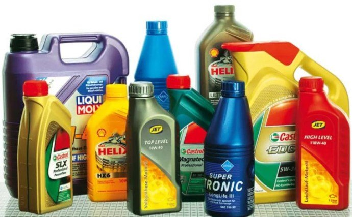

Трансмиссионные масла применяются в механических и автоматических коробках передач, в раздаточных коробках, дифференциалах, механизмах рулевого управления. В таких агрегатах вращающий момент передается зубчатыми парами (косозубые и прямозубые, конические, спирально-конические, червячные и гипоидные передачи). Вид такой передачи и особенности конструкции узла определяют требования к смазочным материалам, которыми и являются трансмиссионные масла. Любые передачи и подшипники в механических агрегатах, как правило, смазываются погружением в масло и разбрызгиванием, но есть тяжелонагруженные сложные конструкции, где такой смазки недостаточно. В такие агрегаты масло подают под давлением.
Необходимо отметить, что в некоторых автомобильных МКПП, используется обычное моторное масло. Какое именно масло используется в КПП, Вы можете узнать в сервисной книге или на сайте автопроизводителя. В отличие от моторных масел, трансмиссионные меняются не так часто (раз в 50 – 70 тыс. км.), но их своевременная замена продлевает срок эксплуатации Вашего автомобиля.
Трансмиссионные масла выполняют следующие функции:
1. Предотвращают износ поверхностей трения и снижают потери на трение.
2. Отводят тепло от поверхностей трения.
3. Снижают ударные нагрузки на шестерни, вибрации и шум.
4. Защищают от коррозии и отводят продукты износа из зон трения.
Чтобы не нарушалась пленка, трансмиссионные масла должны сохранять стабильно – высокую вязкость при рабочих температурах 80 – 120°С (температура масла в местах контакта зубьев достигает 200°С). В тоже время масла не должны быть слишком вязкими при низких температурах окружающей среды, иначе, в начале движения автомобиля, загустевшее масло будет препятствовать свободному вращению шестерен. Требования довольно противоречивые, но таковы реалии.
В соответствии с предъявляемыми требованиями, трансмиссионные масла должны обладать высокими антиокислительными, противоизносными, антикоррозионными и антипенными свойствами.
Вязкостно – температурные свойства трансмиссионных масел определяются по SAE.
Международная классификация по вязкости SAE J306 (Society of Automotive Engeneers) делит трансмиссионные масла на семь классов по вязкости: четыре с индексом «W» (Winter) – зимних: SAE 70W, SAE 75W, SAE 80W, SAE 85W. Чем меньше цифра, тем при более низкой температуре масло сохраняет свои рабочие характеристики. И три класса летних: они обозначаются цифрами: SAE 90, SAE 140 и SAE 250. Чем выше цифра, тем при более высокой температуре масло сохраняет свою работоспособность. Если масло всесезонное, то у него двойная маркировка, например: SAE 80W-90, SAE 75W-90, SAE 75-140.
Эксплуатационные свойства трансмиссионных масел определяются классификацией API. Она делит трансмиссионные масла на 6 групп в соответствии с их областью применения:
GL-1 – Цилиндрические, спирально-конические и червячные передачи, работающие при низких скоростях и нагрузках.
GL-2 – Червячные передачи, работающие при низких скоростях и нагрузках.
GL-3 – Спирально-конические передачи, работающие в умеренно жестких условиях.
GL-4 – Гипоидные передачи, работающие в условиях высоких скоростей при малых крутящих моментах и низких скоростей при больших крутящих моментах.
GL-5 – Та же область, что и GL-4, но при больших ударных нагрузках на зубья шестерен.
GL-6 – Гипоидные передачи с увеличенным смещением, работающие в условиях высоких скоростей, больших крутящих моментов и ударных нагрузок.
Масла для автоматических коробок передач.
В автоматических коробках передач, где крутящий момент передается посредством самого масла (в гидромеханических передачах масло является рабочим телом), используются несколько иные трансмиссионные масла. И к ним предъявляются высочайшие требования по вязкости, антифрикционным, противоизносным и антиокислительным свойствам. Это связано с тем, что автоматические коробки включают в себя достаточно разные узлы: гидротрансформатор, шестеренчатую коробку передач, систему управления, в которых имеются совершенно разные пары трения: сталь – металлокерамика, сталь – сталь, сталь – бронза. Вследствие этого, функции масла, имеют более широкий диапазон. Оно смазывает, охлаждает, и передает крутящий момент.
Динамические нагрузки в гидромеханических передачах меньше, чем в МКПП, из-за отсутствия жесткой связи между двигателем и трансмиссией. Но температура и высокие скорости движения потоков масла в гидротрансформаторе вызывают аэрацию, которая, приводит к вспениванию, что, в свою очередь создает благоприятные условия для окисления масла и коррозии металлов. Рабочая температура масла в картере АКПП составляет 80 – 100°С, а при интенсивном городском движении может достигать 150°С. Вот в таких условиях жидкость АКПП должна не только сохранять свои эксплуатационные свойства и защищать пары трения, но и обеспечивать высокую производительность трансмиссии.
В предыдущих статьях, посвященных АКПП, мы рассказывали, что масла этой группы называются Automatic Transmission Fluids (ATF) – жидкость для автоматических трансмиссий. Эти масла выпускаются под своими индексами, наиболее распространенные из которых – «Dexron» и «Mercon». (О жидкостях, которые использовались до 1986 г. мы даже не будем упоминать). Все ATF представляют собой минеральные, полусинтетические и синтетические масла с хорошей низкотемпературной текучестью и низкой вязкостью (для нормальной работы гидротрансформа 4 – 9 сСт при 100°С).
Тип масла подбирается в зависимости от рекомендаций автопроизводителя. «Dexron» и «Mercon», по-прежнему широко применяется и в настоящее время разработаны их модификации (Dexron II, II-D, II-Е и Dexron III, III-H, III-G). Индекс «D» – масло минеральное, а индекс «Е» – масло синтетическое. «Dexron» III, III-H, III-G и «Mercon» -V представляет собой универсальное полусинтетическое масло.
В отличие от масел для механических КПП, жидкости для АКПП, не имеют жестких международных стандартов, хотя некоторые из них привязаны к SAE и API. Ведущие автопроизводители разработали собственные требования и спецификации к ATF. У «General Motors» – «Dexron» II, III. Нормы компании «Ford» обозначаются как «Mercon», «Mercon» -V. Нормы «Daimler Chrysler» – МВ 236.1, 236.5, 236.10… У автоконцерна «Volkswagen», ATF имеет спецификации VW TL 521 62, VW LT 71141. При этом, многие из этих жидкостей могут смешиваться, (если на упаковке стоит соответствующий допуск), хотя в каждом таком случае, желательно получить консультацию у технического специалиста СТО.
Помимо требований «Ford» и «General Motors», при обозначении спецификации масел для автоматических коробок передач, также используются спецификации фирм: «MAN», «Dаimler Chrysler», «Allison», «Toyota», «ZF», «Renk», «Voith».
Еще немного о трансмиссионных маслах ...
Более подробно о классификации трансмиссионных масел ...